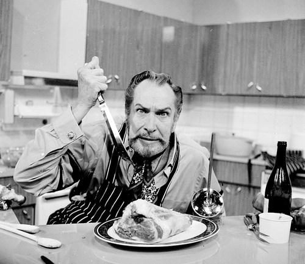

Vincent Leonard Price Jr. (May 27, 1911 – October 25, 1993) was an American actor, well known for his distinctive voice and performances in horror films. His career spanned other genres, including film noir, drama, mystery, thriller, and comedy. He appeared on stage, television, radio, and more than one hundred films. He has two stars on the Hollywood Walk of Fame: one for motion pictures, and one for television. Born and raised near St. Louis, Missouri, Price also has a star on the St. Louis Walk of Fame.